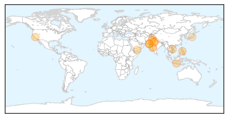

Swine Flu
30-Day Web Trend
3 alerts, 0 warnings

30-Day Twitter Trend
3 alerts, 0 warnings

Article Locations

Article Confidences

Top Articles:
- 0.997
- 22 swine flu cases in Rajasthan in 10 days
- 0.996
- Delhi government asks schools to issue swine flu advisory
- 0.996
- Delhi government asks schools to issue swine flu advisory
- 0.960
- Delhi Government advised schools to issue swine flu advisory
- 0.937
- Flu season approaches, time to get that shot
- 0.797
- Blog: Flu shots compliance took arm-twisting at Delaware system - Modern Healthcare Vital Signs
Top Tweets:
-
No tweets found for Oct 20, 2015
Dengue Fever
30-Day Web Trend
0 alerts, 0 warnings
30-Day Twitter Trend
0 alerts, 0 warnings

Article Locations
Article Confidences

Top Articles:
- 0.997
- Dengue spreads at alarming level, as more cases surface
- 0.992
- Outbreak of Dengue Fever at an Alarming Level in Pakistan
- 0.991
- Dengue rears its head in Jaipur, claims 6 lives in a month
- 0.982
- Delhi struggles to control dengue; Health officials blamed for slow response
- 0.979
- CDC says woman bitten by rabid dog hospitalized
- 0.979
- Science, Technology and Medicine News Updates From Asia
- 0.967
- ‘Majority of dengue cases reported in Karachi’
- 0.964
- Two More Reasons Besides West Nile Virus to Fear Mosquitoes in California
- 0.949
- Number of dengue-affected people crosses 2000 in Rawalpindi
- 0.918
- PMC confirms just one dengue death in Pune since January
- 0.910
- WHO responds to deteriorating health situation in Taiz, Yemen [EN/AR] - Yemen
- 0.847
- Vietnam reports 30 percent increase in dengue this year
- 0.804
- Latest News & Updates at Daily News & Analysis
- 0.743
- Fogging caught in fog
Top Tweets:
-
No tweets found for Oct 20, 2015